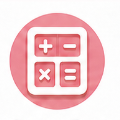
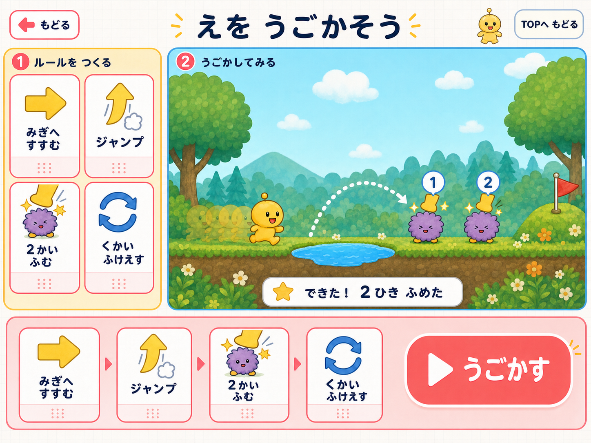
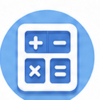
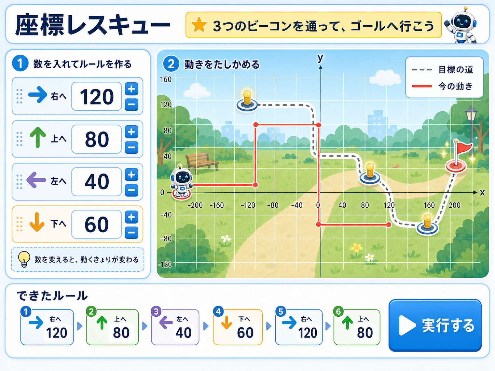

はじめてのプログラミングにちょうせん
がくねんを えらんでね
まず はじめに
つくる → 小さく かくにん → くりかえす
-
1
ルールを つくる
けいさんや えの うごきを、じぶんで きめよう。
○＋△＝□ ／ みぎへ すすむ -
2
小さく ルールを かくにんする
できたルールを すこしだけ じっこうして、あっているか見るよ。
まずは 少ない くりかえしで ためす -
3
なんども つかう
あっていたら、大きな 数の くりかえしでも ためせるよ。
少ない回数 → 大きな回数へ すすむ

けいさん
えを うごかす
計算
絵を動かすけいさんマシンを つくろう
ここから まなぶこと
○・△・＋・−を くみあわせて、じぶんの けいさんマシンを つくります。
まずは すくない くりかえしで、ルールが ただしく うごくか たしかめます。
うまく うごいたら、おなじ ルールを たくさん つかえることを まなびます。
ルールを つくる
カードを ゆびで はこんで、わくに いれよう
けいさんマシン ＝ じぶんで つくる ルール
おなじ しるし ＝ おなじ すうじ
わくを おすと もどるよ
まだ ルールは できていないよ
おなじ ルールを 3かい つかう
つくった ルールを 3かい つかう
はじめに ルールを つくろう
3かい けいさん
- かかった じかん
- まだ けいさんしていないよ
- せいかい
- 0 / 3
- まちがい
- 0かい
けいさんリスト
- ルールを つくって、3かい けいさんしてみよう
ルールが ちがうと こたえも ちがう。さいしょに ためそう。
計算ルールから電卓を作ろう
ここから学ぶこと
A・B・Cと演算を組み合わせ、電卓のような計算ルールを作ります。
最初は小さく実行し、式の組み立てが正しいか確かめます。
同じ計算ルールへ数字を入れ替え、何度でも正確に使います。
計算ルールを作る
A・B・C と ×・＋・−を指で運び、式を作ろう
電卓 ＝ 自分で作る計算ルール
まだルールはできていません
同じルールを繰り返す
作ったルールを何度でも再利用できます
×を先に、＋と−は左から計算します
はじめにルールを作ろう
実行結果
- 計算にかかった時間
- まだ計算していません
- 正解
- 0 / 3
- ミス
- 0回
計算リスト
- ルールを作り、回数を選んで実行してみよう
複雑な式もルールにすれば、電卓のようにすぐ正確に実行できます。
おなじ けいさんを やってみよう
プログラムは どうやって けいさんするの？
スタートを おすと、いっしょに はじまるよ
こたえを えらぼう
0 / 3もんどうして すぐに せいかくに できたのかな？
となりの ひとと はなして、あてはまる ことばを おそう
きめた やりかたを、まちがえずに なんどでも できるから
カードを おして じゅんばんに ならべよう
えを うごかそう！
めいれいカード
カードを えらぶ
つくった プログラム